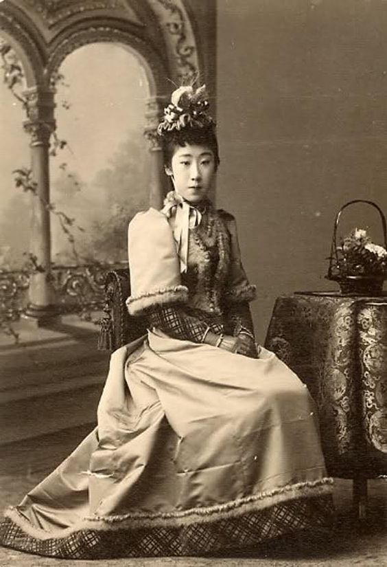
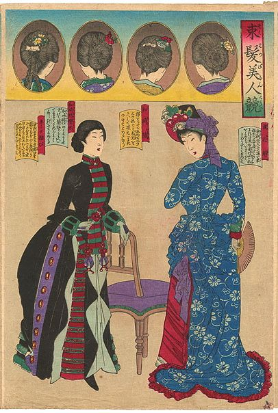
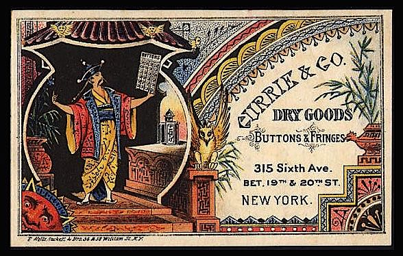
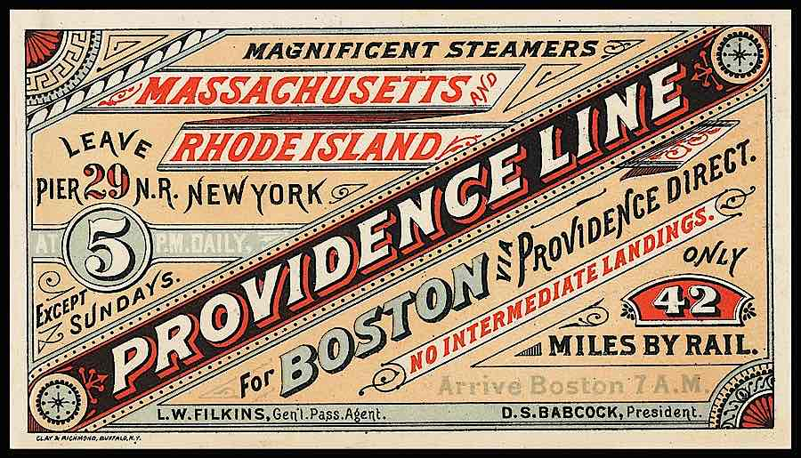
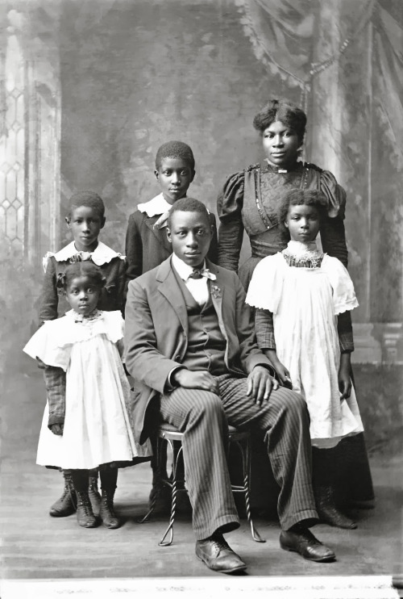

Primary
Secondary
Main Street
Dublin, Ireland (1899)

Calling Cards
America (19th C.)


My Dear Sir...
Oscar Wilde’s 1890 letter to an Oxford student on the uselessness of art
"Art is useless because its aim is simply to create a mood. It is not meant to instruct, or to influence action in any way. It is superbly sterile, and the note of its pleasure is sterility. If the contemplation of a work of art is followed by activity of any kind, the work is either of a very second-rate order, or the spectator has failed to realise the complete artistic impression.
A work of art is useless as a flower is useless. A flower blossoms for its own joy. We gain a moment of joy by looking at it. That is all that is to be said about our relations to flowers. Of course man may sell the flower, and so make it useful to him, but this has nothing to do with the flower. It is not part of its essence. It is accidental. It is a misuse. All this is I fear very obscure. But the subject is a long one.
Truly yours,
Oscar Wilde"
Japanese Influence
Japan, Meiji Era
 Victorian Costumes
Bat Inspired


Trade Cards
Cards used to advertise businesses and goods
 
Artificial Limb
Brass and Iron

Skating
Color Illustration

The Higdon Family
Black Victorians
Victorian Home Life
BBC Schools
Victorian Town Life
BBC Schools
Etiquette of the 1890s
Janet Parnes performs as Mrs. Russell Parsons
Lonely Hearts Ads
The Allusionist: WLTM Part 1

As soon as one got the first newspapers and magazines, one got the first lonely hearts ads. They all emerged together. In the 1690s in London, suddenly the streets were full of newspapers and magazines; print really took off in a big way.
- Francesca Beauman